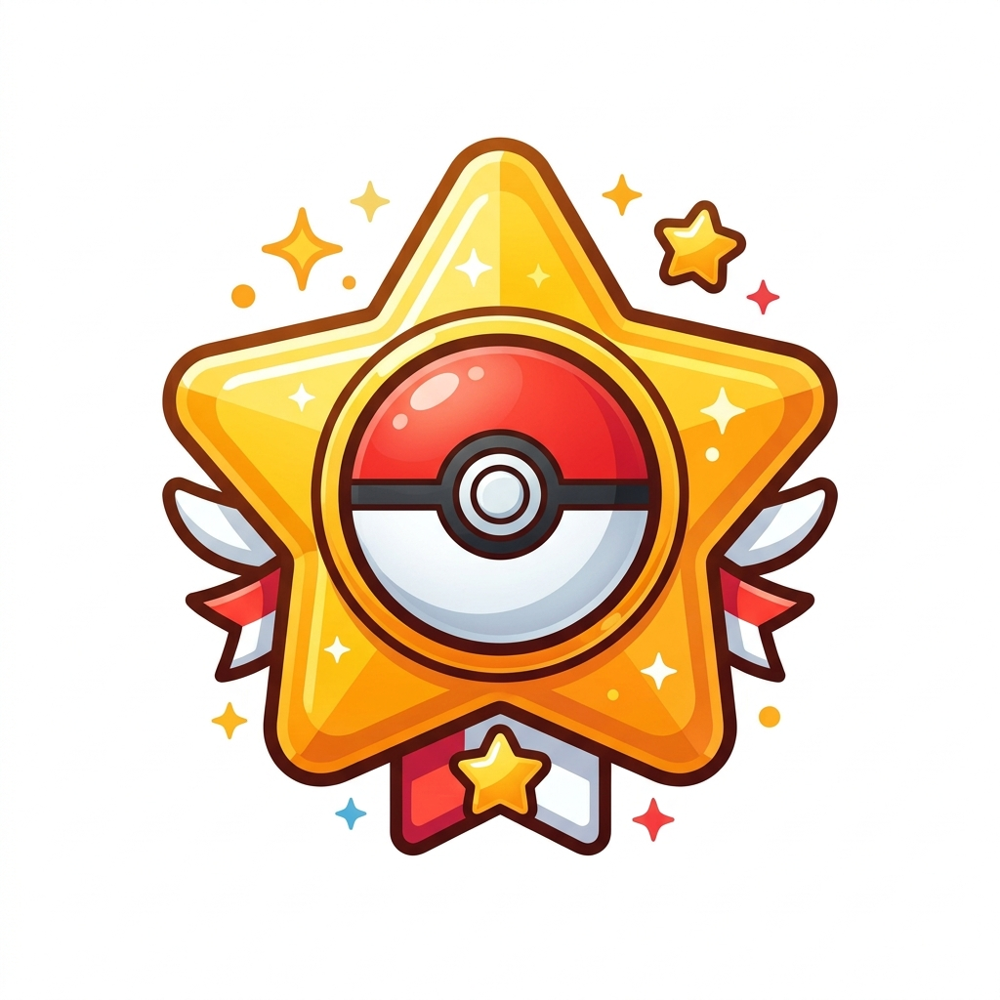

P4 寶可夢操作小幫手
未登入
主頁
主頁
準備出發做任務！
請先選好班別、學號（不用輸入姓名），再選課次與模式。
1. 選擇班別
P4A
P4B
P4C
P4D
P4E
P4F
2. 選擇學號
3. 選擇課次（自動讀取雲端總表）
第5課_水和雲動畫（示範・11步驟）
第3課_認識PowerPoint
第4課_四季的變化（示範・11步驟）
第6課_太陽系動畫（示範・10步驟）
第9課_Scratch繪製星圖
開始任務 ▶
第5課_水和雲動畫
1 / 11
任務 1 · 套用小水滴佈景主題
步驟 1.1
第一層：書本頁碼
第二層：示範 GIF
課本位置：
避坑提醒：
示範動圖載入失敗，請先對照「第一層：書本頁碼」或向老師舉手示意！
🔍 放大看清楚

恭喜完成本課挑戰！
返回主頁
匯出本機學習記錄 (CSV)
✕ 關閉放大檢視
◀ 上一步
主頁
下一步 ▶